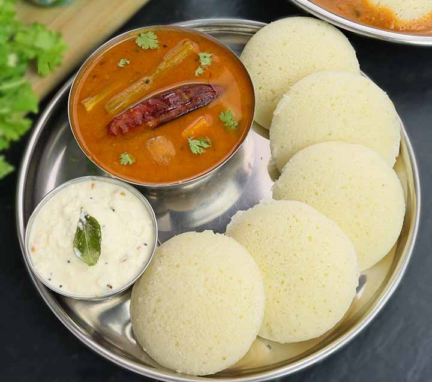
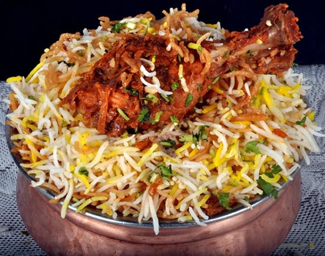
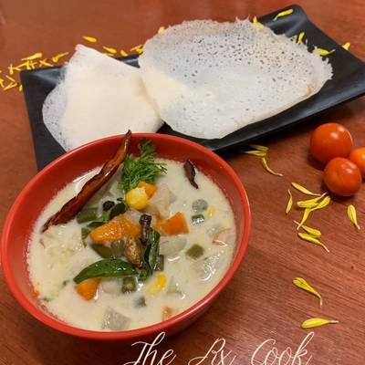
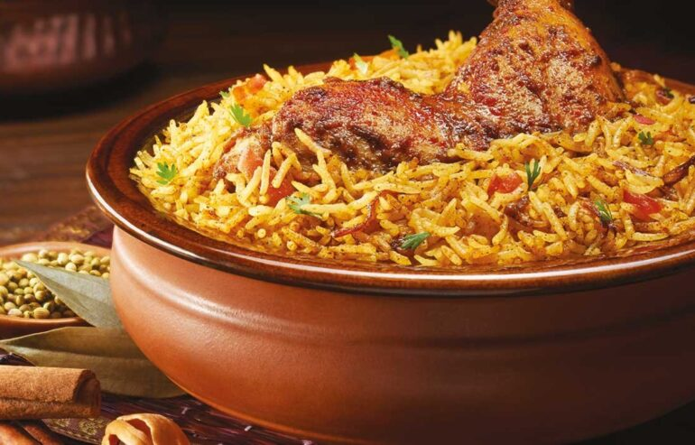
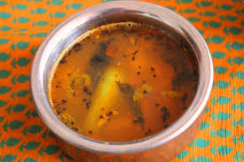
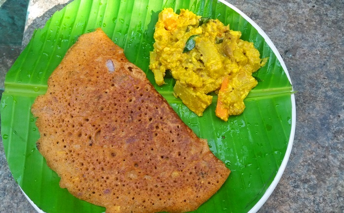
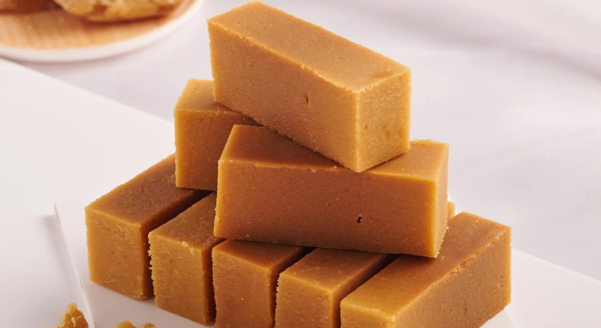
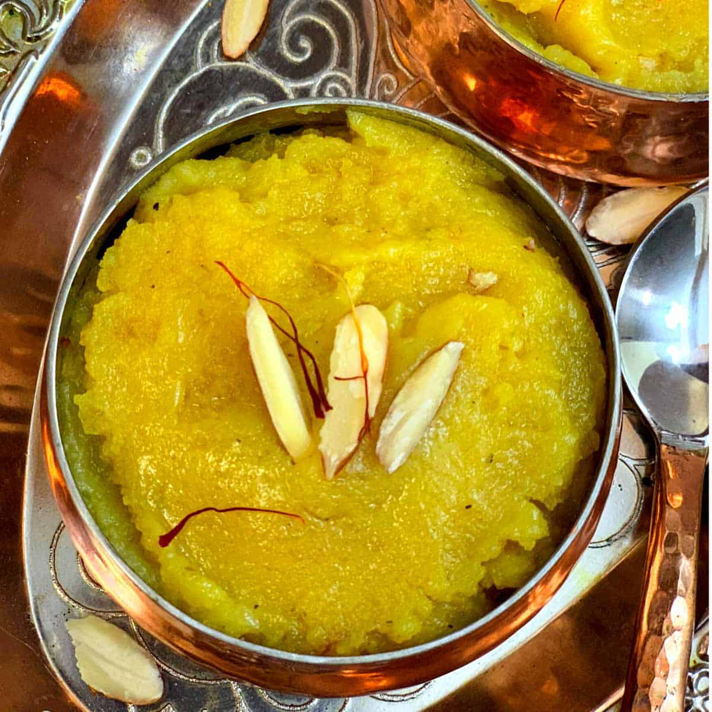
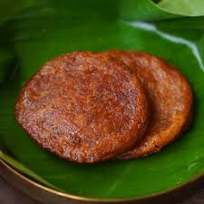
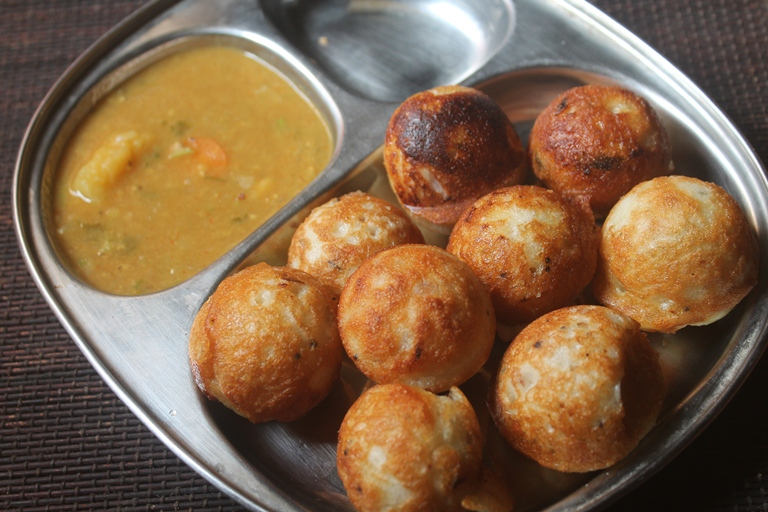

Indulge in the irresistible delight of masala dosa: a South Indian culinary masterpiece! Crispy, golden crepe enveloping a savory filling of spiced potatoes, served with coconut chutney and sambar for a truly flavorful experience.

IDLI SAMBAR
Idli Sambhar is a South Indian delicacy loved for its soft, fluffy idlis served with a flavorful lentil-based sambhar. This comforting dish is a perfect blend of savory and tangy flavors, making it a favorite breakfast or snack across India.
CHICKEN CHETTINAD
Chicken Chettinad is a spicy and aromatic dish from the Chettinad region of Tamil Nadu, India. It boasts a rich blend of roasted spices, coconut, and curry leaves, creating a tantalizing flavor profile that pairs perfectly with steamed rice or flaky parathas.

BIRYANI
Biryani is a mixed rice dish, mainly popular in South Asia. It is made with rice, some type of meat (chicken, beef, prawn, or mutton) and spices in Chennai.

APPAM WITH STEW
Indulge in the delicate flavors of South India with soft, lacy appams paired perfectly with aromatic stew, a tantalizing blend of vegetables and spices, offering a culinary journey like no other.

THALASSERY BIRYANI
Experience the rich heritage of Malabar cuisine with Thalassery biryani, fragrant basmati rice layered with succulent meat, caramelized onions, and an exquisite blend of spices, promising a symphony of flavors in every bite.
CHETTINAD CHICKEN FRY
Indulge in the fiery flavors of Chettinad cuisine with succulent chicken pieces marinated in a blend of aromatic spices and fried to perfection, delivering a tantalizing burst of taste with every bite.

RASAM
Experience the comforting warmth of traditional South Indian rasam, a soul-soothing broth infused with tangy tamarind, aromatic spices, and a hint of peppery goodness, guaranteed to invigorate your senses.

ADAI AVIAL
Delight in the wholesome goodness of adai avial, a nutritious pancake made from a medley of lentils and rice, served with a side of avial—a creamy coconut and vegetable stew—creating a harmonious symphony of flavors and textures.
PONGAL
Pongal, a South Indian delicacy, is a savory dish made with rice, lentils, and spices, symbolizing abundance and prosperity. Its rich flavor and creamy texture make it a delightful treat during the festive season.

MYSORE PAK
Mysore Pak, originating from the royal kitchens of ancient South-India, is a melt-in-your-mouth sweet made from gram flour, ghee, and sugar. Its soft, crumbly texture and aromatic ghee flavor make it an irresistible indulgence during celebrations.
RAVA KESARI
Rava Kesari, a traditional Indian dessert, is made from semolina, ghee, sugar, and flavored with cardamom and saffron. Its vibrant color and heavenly aroma make it a popular choice for festivals and special occasions, delighting taste buds with its sweet and fragrant essence.

BADAM HALWA
Indulge in the rich, nutty delight of Badam Halwa, a traditional Indian sweet made from almonds, ghee, and sugar. Its heavenly taste and velvety texture make it a favorite during festive occasions.

ADHIRASAM
Experience the crispy sweetness of Adhirasam, a deep-fried South Indian delicacy made from rice flour, jaggery, and cardamom. Its aromatic flavors and unique texture make it a cherished treat during celebrations.

PANIYARAM
Delight in the fluffy goodness of Paniyaram, a South Indian snack prepared by steaming a batter made from fermented rice and lentils. Enjoy its spongy texture and versatility as a savory or sweet dish.